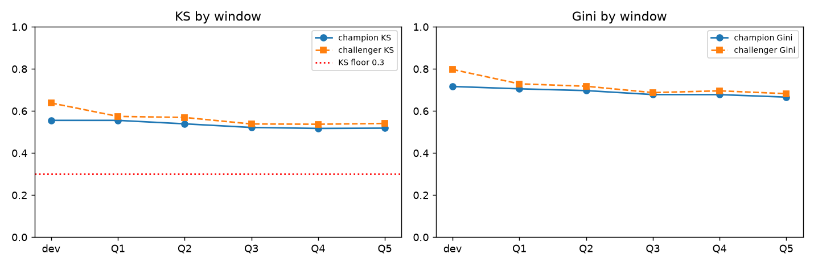
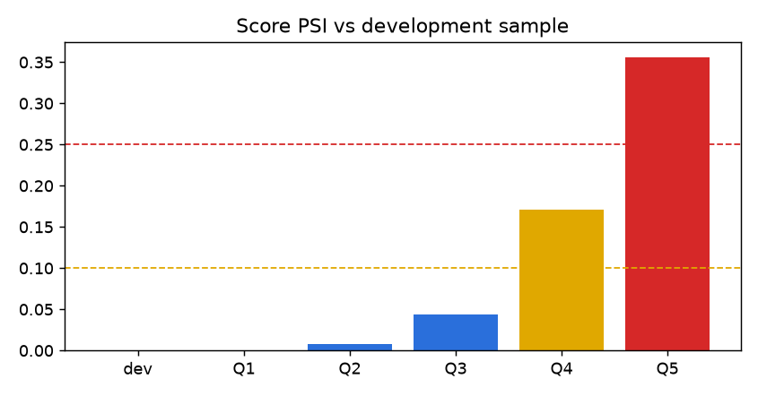
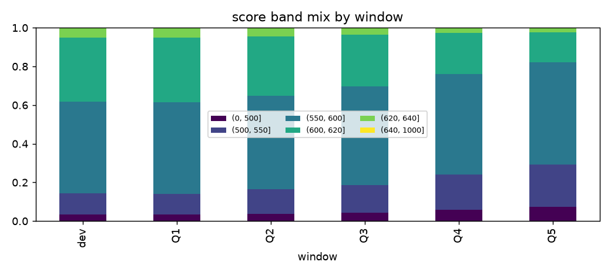
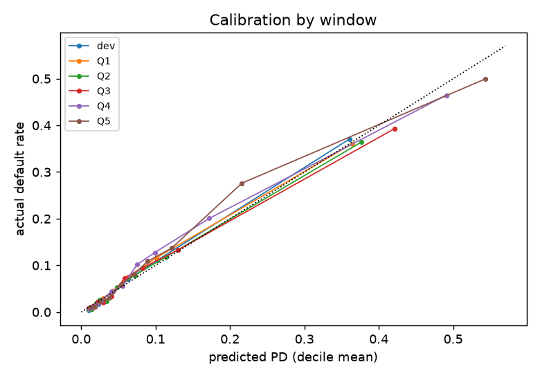

Application scorecard predicting the probability that a retail borrower experiences 90+ days delinquency within two years (target SeriousDlqin2yrs). Intended use: ranking applicants for approve/decline and pricing tiers. Development data: the Kaggle 'Give Me Some Credit' sample (150,000 borrowers). Monitoring windows are simulated from held-out slices of the same data with a documented covariate shift (config.yaml -> windows.drift), because the public dataset carries no dates.
Weight-of-evidence binning with monotone risk ordering per characteristic and a logistic regression on the WOE-transformed features; points scaled so that 600 points correspond to 50:1 odds and 20 points double the odds. All characteristics show information value above 0.02 and variance inflation factors below 2 (see credit-risk-scorecard). Monotonicity of bad rate across bins is enforced by the binning choices in config.yaml.
| feature | iv |
|---|---|
| util | 1.1897 |
| late90 | 0.8934 |
| late30 | 0.7915 |
| late60 | 0.6245 |
| age | 0.2761 |
| income | 0.0617 |
| debtratio | 0.0318 |
| feature | bin | woe | points |
|---|---|---|---|
| util | (-0.002, 0.1] | 1.4 | 105.6 |
| util | (0.1, 0.3] | 0.8 | 95.0 |
| util | (0.3, 0.5] | 0.1 | 82.3 |
| util | (0.5, 0.7] | -0.4 | 72.9 |
| util | (0.7, 0.9] | -0.9 | 64.6 |
| util | (0.9, 1.0] | -1.2 | 58.3 |
| util | (1.0, 1000000000.0] | -2.2 | 39.4 |
| age | (-1.001, 30.0] | -0.7 | 71.4 |
| age | (30.0, 35.0] | -0.5 | 73.8 |
| age | (35.0, 40.0] | -0.3 | 76.1 |
| age | (40.0, 45.0] | -0.2 | 77.2 |
| age | (45.0, 50.0] | -0.2 | 78.2 |
| age | (50.0, 55.0] | -0.1 | 79.6 |
| age | (55.0, 60.0] | 0.2 | 82.6 |
| age | (60.0, 65.0] | 0.5 | 86.4 |
| age | (65.0, 120.0] | 1.2 | 95.3 |
| late30 | (-1.001, 0.0] | 0.6 | 88.6 |
| late30 | (0.0, 1.0] | -0.9 | 66.7 |
| late30 | (1.0, 2.0] | -1.6 | 55.7 |
| late30 | (2.0, 98.0] | -2.3 | 45.9 |
| debtratio | (-0.002, 0.2] | 0.1 | 81.4 |
| debtratio | (0.2, 0.4] | 0.2 | 83.5 |
| debtratio | (0.4, 0.6] | -0.1 | 77.9 |
| debtratio | (0.6, 1.0] | -0.4 | 72.2 |
| debtratio | (1.0, 1000000000.0] | 0.0 | 80.7 |
| income | (-1.001, 2500.0] | -0.0 | 80.1 |
| income | (2500.0, 4500.0] | -0.3 | 77.1 |
| income | (4500.0, 6500.0] | -0.0 | 79.8 |
| income | (6500.0, 9000.0] | 0.3 | 82.6 |
| income | (9000.0, 13000.0] | 0.4 | 84.2 |
| income | (13000.0, 1000000000.0] | 0.4 | 84.1 |
| late90 | (-1.001, 0.0] | 0.4 | 86.1 |
| late90 | (0.0, 1.0] | -2.0 | 51.0 |
| late90 | (1.0, 2.0] | -2.7 | 40.0 |
| late90 | (2.0, 98.0] | -3.0 | 34.8 |
| late60 | (-1.001, 0.0] | 0.3 | 83.3 |
| late60 | (0.0, 1.0] | -1.9 | 60.9 |
| late60 | (1.0, 98.0] | -2.8 | 51.7 |
KS ≥ 0.3 and a Gini drop below 10 % of development are GREEN; PSI < 0.1 GREEN, 0.1-0.25 AMBER, above RED; |actual − predicted| default rate ≤ 2.0 pp GREEN.
| window | n | bad_rate | champion_ks | champion_gini | score_psi | psi_rag | ks_rag | gini_rag | avg_pd | actual_minus_predicted | calibration_rag | hl_p |
|---|---|---|---|---|---|---|---|---|---|---|---|---|
| dev | 59819 | 0.068 | 0.555 | 0.716 | 0.000 | GREEN | GREEN | GREEN | 0.068 | -0.000 | GREEN | 0.000 |
| Q1 | 18171 | 0.069 | 0.555 | 0.705 | 0.000 | GREEN | GREEN | GREEN | 0.068 | 0.001 | GREEN | 0.001 |
| Q2 | 15716 | 0.070 | 0.539 | 0.697 | 0.007 | GREEN | GREEN | GREEN | 0.073 | -0.002 | GREEN | 0.005 |
| Q3 | 12603 | 0.080 | 0.522 | 0.678 | 0.044 | GREEN | GREEN | GREEN | 0.083 | -0.002 | GREEN | 0.013 |
| Q4 | 9467 | 0.105 | 0.517 | 0.678 | 0.171 | AMBER | GREEN | GREEN | 0.101 | 0.004 | GREEN | 0.000 |
| Q5 | 7269 | 0.124 | 0.518 | 0.666 | 0.356 | RED | GREEN | GREEN | 0.119 | 0.005 | GREEN | 0.000 |


| window | feature | dev | Q1 | Q2 | Q3 | Q4 | Q5 |
|---|---|---|---|---|---|---|---|
| age | 0.000 | 0.000 | 0.003 | 0.017 | 0.051 | 0.103 | |
| debtratio | 0.000 | 0.000 | 0.000 | 0.003 | 0.003 | 0.006 | |
| income | 0.000 | 0.000 | 0.000 | 0.002 | 0.002 | 0.011 | |
| late30 | 0.000 | 0.000 | 0.001 | 0.002 | 0.014 | 0.026 | |
| late60 | 0.000 | 0.000 | 0.000 | 0.002 | 0.008 | 0.020 | |
| late90 | 0.000 | 0.000 | 0.000 | 0.003 | 0.012 | 0.032 | |
| util | 0.000 | 0.000 | 0.008 | 0.047 | 0.195 | 0.403 |

Predicted vs actual default rate by score decile, per window. Hosmer-Lemeshow p-values are reported but with tens of thousands of rows per window the test rejects on tiny gaps, so the absolute gap is the operative check.

| window | decile | dev | Q1 | Q2 | Q3 | Q4 | Q5 |
|---|---|---|---|---|---|---|---|
| 0 | -0.0054 | -0.0034 | -0.0040 | -0.0014 | -0.0048 | -0.0021 | |
| 1 | -0.0054 | -0.0074 | -0.0084 | -0.0032 | -0.0064 | -0.0072 | |
| 2 | -0.0042 | -0.0065 | -0.0050 | -0.0052 | -0.0044 | -0.0020 | |
| 3 | -0.0065 | -0.0031 | -0.0011 | -0.0005 | -0.0028 | -0.0080 | |
| 4 | -0.0057 | -0.0006 | +0.0007 | -0.0085 | +0.0031 | +0.0058 | |
| 5 | -0.0001 | -0.0002 | -0.0102 | -0.0070 | +0.0007 | +0.0102 | |
| 6 | +0.0015 | +0.0028 | +0.0049 | +0.0145 | +0.0265 | +0.0195 | |
| 7 | +0.0071 | +0.0125 | +0.0068 | +0.0120 | +0.0286 | +0.0154 | |
| 8 | +0.0087 | +0.0151 | +0.0043 | +0.0029 | +0.0285 | +0.0601 | |
| 9 | +0.0100 | -0.0037 | -0.0125 | -0.0283 | -0.0260 | -0.0436 |
The challenger is a gradient-boosted tree model trained on the same development window and raw (unbinned) characteristics. It is used as a yardstick for how much discriminatory power the linear scorecard leaves on the table, not as a replacement candidate.
| window | champion_ks | challenger_ks | champion_gini | challenger_gini | gini_rel_drop | challenger_gini_rel_drop |
|---|---|---|---|---|---|---|
| dev | 0.555 | 0.638 | 0.716 | 0.797 | 0.000 | 0.000 |
| Q1 | 0.555 | 0.574 | 0.705 | 0.729 | 0.016 | 0.086 |
| Q2 | 0.539 | 0.569 | 0.697 | 0.718 | 0.027 | 0.100 |
| Q3 | 0.522 | 0.538 | 0.678 | 0.687 | 0.054 | 0.138 |
| Q4 | 0.517 | 0.537 | 0.678 | 0.696 | 0.054 | 0.127 |
| Q5 | 0.518 | 0.541 | 0.666 | 0.682 | 0.071 | 0.144 |
| feature | importance |
|---|---|
| NumberOfTimes90DaysLate | 0.402 |
| RevolvingUtilizationOfUnsecuredLines | 0.212 |
| NumberOfTime30-59DaysPastDueNotWorse | 0.114 |
| NumberOfTime60-89DaysPastDueNotWorse | 0.085 |
| DebtRatio | 0.060 |
| age | 0.047 |
| MonthlyIncome | 0.033 |
| NumberOfOpenCreditLinesAndLoans | 0.020 |
| NumberRealEstateLoansOrLines | 0.016 |
| NumberOfDependents | 0.011 |